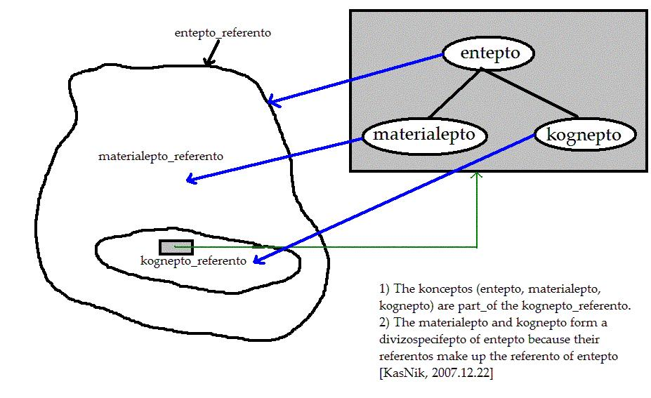
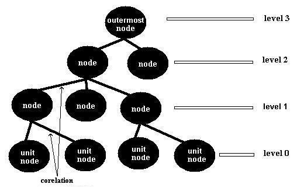

We don't know how exactly a b-conceptual--worldview is (memorized in the brain). But at least it is organized in 2 TREE-STRUCTURES of b-concepts. part-whole and specific-generic sub-structures TOGETHER. #h0.4.2p1#
AAj:: The 59 Sensorial-BConcepts
I present here alphabetically the main 59
sensorial-b-concepts
of my theory with their main relations.
Indeed this is the
sensorial-b--sub-worldview
of my theory in html format (hcpt), too cumbersome to be evolved.
#h0p1#
NOTE:
Don't forget that all these are
b-concepts part of MY
brainual-worldview that reflects my brainual, semasial and logal views.
#h0p2#
specific:
Action is a
process of an
entity that changes another entity.
#h0.1.1p1#
Komo:
* Rutino.
#h0.1.2p1#
List:
* Process.
#h0.1.3p1#
List:
* Function.
#h0.1.4p1#
hcpt:: RUTINOLO (AGENT):
Definition:
I call the entity that does the action (the who).
#h0.1.5p1#
hcpt:: RUTINELO:
Definition:
I call the entity that is changing from the rutinolo.
#h0.1.5p2#
hcpt:: RUTINULO:
Definition:
I call the product of the action, if any.
#h0.1.5p3#
hcpt:: RUTINALO:
Definition:
I call any other argument of an action.
#h0.1.5p4#
attribute:
Attribute-of-entity I call any other ENTITY such
as part, whole, environment, generic, specific
CORELATED with our entity. [nikkas, 2003.11.01]
#h0.2.1p1#
List:
* Relator-of-entity.
* Entity.
#h0.2.2p1#
List:
* PART-ATTRIBUTE.
* EXTERNAL-ATTRIBUTE.
#h0.2.3p1#
List:
* WHOLE-ATTRIBUTE.
* ENVIRONMENT-ATTRIBUTE.
#h0.2.4p1#
hcpt:: GENERIC-ATTRIBUTE:
Definition:
It is a generic--b-concept of our-entity.
Synonym:
* Generic-of-entity.
#h0.2.4p2#
hcpt:: SPECIFIC-ATTRIBUTE:
Definition:
It is a specific--b-concept of our-entity.
Synonym:
* Specific-of-entity.
#h0.2.4p3#
hcpt:: PARTIAL-COMPLEMENT-ATTRIBUTE:
Definition:
It is another-entity, which creates with our-entity a whole-entity.
Synonym:
* Partial-complement-of-entity.
#h0.2.4p4#
hcpt:: SPECIFIC-COMPLEMENT-ATTRIBUTE:
Definition:
It is another-entity, which creates with our-entity a generic-entity.
Synonym:
* Specific-complement-of-entity.
#h0.2.4p5#
List:
* ENTITY.
#h0.2.5p1#
hcpt:: ATTRIBUTE-RELATION:
Definition:
between the entity and the attribute exists a
relation. I call it attribute-relation.
Three entities are involved in the above definition:
a) the entity.
b) the attribute-relation and
c) the attribute-of-entity.
Synonym:
* Atreino.
Generic:
* Relation.
Specific:
* hcpt:: PART/INTERNAL-RELATION:
the relation of an entity and its
part-attribute.
* hcpt:: EXTERNAL-RELATION:
the relation of an entity and its
external-attribute.
* hcpt:: WHOLE-RELATION:
the external-relation of an entity and its
whole-attribute.
* hcpt:: GENERIC-RELATION:
the external-relation of an entity and its
generic-attribute.
* hcpt:: SPECIFIC-RELATION:
the external-relation of an entity and its
specific-attribute.
#h0.2.5p2#
whole:
BConceptual-info is ANY stucture
of b-concepts of
an organism with a brain.
#h0.3.1p1#
List:
* Human-brainual-worldview.
#h0.3.2p1#
List:
* Brainual-info.
#h0.3.3p1#
LIST:
* BConcept.
* BConceptual--sub-worldview.
* BConceptual-worldview.
#h0.3.4p1#
whole:
BConceptual-worldview is a
structure of b-concepts of
an organism with a brain that reflects the organism's universe.
#h0.4.1p1#
We don't know how exactly a b-conceptual--worldview is (memorized
in the brain). But at least it is organized in 2
TREE-STRUCTURES of b-concepts.
part-whole and specific-generic sub-structures TOGETHER.
#h0.4.2p1#
hcpt:: B-CONCEPTUAL--SUB-WORLDVIEW (brl-cpt):
Definition:
It is any sub-structure of a b-conceptual--worldview.
#h0.4.3p1#
List:
* Human-brainual-worldview.
#h0.4.4p1#
List:
* Brainual-info.
#h0.4.5p1#
whole:
BConcept is a perception
plus a NAME created by a language.
#h0.5.1p1#
generic:
BConcept is the most generic in the
MetaBConcept-subWorldview.
#h0.5.1p2#
BConcepts form tree-structures like perceptions.
I call b-conceptual--sub-worldview
the tree-structures of b-concepts.
Every NODE of a
b-conceptual--sub-worldview is a bConcept.
Example: "Car" is a generic--b-concept. "My car" is an
individual--b-concept and the real-car I drive is the
referent of "my car".
#h0.5.2p1#
English:
* BConcept.
* Brain-concept,
* Mental-concept,
* Kognepo,
* Koncepo,
* Koncepto.
#h0.5.3p1#
The greek name for "concept" is "έννοια", from "εν νου"
(= inside the mind).
The english name comes from latin "conceptum", neuter of
"conceptus", past participle of "concipere" (= to conceive).
[http://www.merriam-webster.com/dictionary/concept]
#h0.5.3p2#
hcpt:: DESIGNATOR-OF-BCONCEPT (brl-cpt):
Definition:
generic: It is any of the terms-of--b-concept,
or its non-term-names.
Specific:
* hcpt:: UNIQUE-DESIGNATOR:
is any designator-of--b-concept that UNIQUELY identifies the b-concept.
#h0.5.4p1#
List:
* BConceptual--sub-worldview.
* Brain.
#h0.5.5p1#
List:
* Brainual-info.
#h0.5.6p1#
hcpt:: AXIOM-BCONCEPT (brl-cpt):
Definition:
It is a b-concept defined with an axiom-definition, ie from NO
other b-concepts, IN a structure.
Synonym:
* Start--b-concept.
#h0.5.7p1#
hcpt:: NON-AXIOM-BCONCEPT (brl-cpt):
Definition:
It is a b-concept defined with a non-axiom-definition, ie
form other bConcept|bConcepts.
#h0.5.7p2#
hcpt:: ATTRIBUTE--B-CONCEPT (brl-cpt):
Definition:
It is a b-concept created with an attribute-definition, ie as
attribute of other bConcept|bConcepts.
Specific:
* END-BCONCEPT is an attribute--b-concept from
which no other b-concept is created.
Specific:
* MIDDLE-BCONCEPT is an attribute--b-concept
from which other b-concepts are created.
#h0.5.8p1#
hcpt:: NON-ATTRIBUTE--B-CONCEPT (brl-cpt):
Definition:
It is a b-concept created with a non-attribute-definition, ie as
non-attribute of other bConcept|bConcepts.
#h0.5.8p2#
hcpt:: GENERIC-BCONCEPT (brl-cpt):
Definition:
generic--b-concept is a CONCEPT G for which exists other
bConcepts, at least two, that
a) have the attributes of G and
b) the union of referents of these b-concepts make
the referent of G. [nikkas, 2001.04.25]
Synonym:
* Generic-entity.
#h0.5.8p3#
hcpt:: SPECIFIC--B-CONCEPT (brl-cpt):
Definition:
specific--b-concept is a b-concept S for which exists
another b-concept G such as
a) the attributes of S is a superset of the attributes of G and
b) the referent of S is a subset of the referent of G.
[2008.10.06]
Synonym:
* Specific-entity.
#h0.5.8p4#
hcpt:: INDIVIDUAL-BCONCEPT (brl-cpt):
Definition:
It is a SPECIFIC--B-CONCEPT of a b-concept with no specifics
AND with one referent. For example "my-car" is an individual of "car".
[nikkas, 2002.08.15]
Synonym:
* Individual--b-concept,
* instance-entity.
#h0.5.9p1#
hcpt:: UNDEFINED-BCONCEPT (brl-cpt):
Definition:
It is a b-concept used in speech without definition. As a result,
anyone sets its own meaning (boundaries), and miscommunication is
the final consequence.
A considerable amount of scientific and social CONTROVERSY
is over undefined or vague bConcepts!!!
Synonym:
* Undefined--b-concept.
#h0.5.9p2#
hcpt:: VAGUE-BCONCEPT (brl-cpt):
Definition:
It is a b-concept defined without CLEAR boundaries.
Description:
a vague--b-concept could be generic or individual.
Synonym:
* Indefinite--b-concept.
#h0.5.9p3#
hcpt:: NON-VAGUE--BCONCEPT (brl-cpt):
Definition:
It is a b-concept defined WITH CLEAR boundaries.
Description:
a vague--b-concept could be generic or individual.
Synonym:
* Definite--b-concept.
#h0.5.9p4#
hcpt:: RELATIVE-BCONCEPT (brl-cpt):
Definition:
It is a b-concept defined ONLY in relation to
another b-concept (point-of-reference).
Description:
the use of a relative--b-concept without its point-of-reference,
says nothing!!!
#h0.5.9p5#
hcpt:: NON-RELATIVE--BCONCEPT (brl-cpt):
Definition:
It is a b-concept defined WITHOUT in relation to
another b-concept (point-of-reference).
Synonym:
* Absolute--b-concept.
#h0.5.9p6#
List:
* Referent.
* Sensorial--b-concept.
* Semasial-concept.
* Logal-concept.
#h0.5.10p1#
hcpt:: CONCEPT's-CREATION (brl-cpt):
Description:
It includes a definition-function
and a name-creation function.
#h0.5.10p2#
generic:
Brainual-info is any
perceptual-info or bConceptual-info.
#h0.6.1p1#
English:
* Mental-entity. Thought.
#h0.6.2p1#
List:
* Brainulo.
Entity.
#h0.6.3p1#
Specific-Complement on entity:
* Material-entity.
#h0.6.3p2#
hcpt:: REAL-BRAINUAL-INFO (brl-cpt):
Definition:
It is a brainual-info that reflects an existing
referent.
#h0.6.4p1#
hcpt:: IMAGINARY-BRAINUAL-INFO (brl-cpt):
Definition:
It is a brainual-info that does NOT reflect an existing
referent.
#h0.6.4p2#
hcpt:: STRONG-TRUE (brl-cpt):
Definition:
It is a real--brainual-info that reflects strongly-accurately its
referent.
#h0.6.5p1#
hcpt:: TRUE (brl-cpt):
Definition:
It is a real--brainual-info that reflects accurately its referent.
#h0.6.5p2#
hcpt:: WEAK-TRUE (brl-cpt):
Definition:
It is a real--brainual-info that reflects weakly-accurately its referent.
#h0.6.5p3#
hcpt:: WEAK-FALSE (brl-cpt):
Definition:
It is a real--brainual-info that reflects weakly-falsely its referent.
#h0.6.5p4#
hcpt:: FALSE (brl-cpt):
Definition:
It is a real--brainual-info that reflects falsely its referent.
#h0.6.5p5#
hcpt:: STRONG-FALSE (brl-cpt):
Definition:
It is a real--brainual-info that reflects strongly-falsely its referent.
#h0.6.5p6#
List:
* Percept.
Perceptual-subWorldview,
BConcept.
#h0.6.6p1#
List:
* Referent.
#h0.6.7p1#
part:
Every organism with a brain, creates,
INSIDE his brain, a REFLECTION of the universe that surrounds
him/her AND an introspection of him/her.
I call it brainual-worldview.
#h0.7.1p1#
English:
* Brainual-info-worldview, Vudosimbepto, Belief-system,
Knowledge-system, Outermost-subWorldview,
Ontology, Theory-of-mind, System-of-thought.
#h0.7.2p1#
List:
* PERCEPT.
#h0.7.3p1#
hcpt:: BRAINUAL--SUB-WORLDVIEW (brl-cpt):
Definition:
part: it is any sub-structure of a brainual-worldview.
Synonym:
* Subview.
* View,
* Vudepto.
Part:
* Brainual-info.
Generic:
* Brainulo
* SubWorldview.
Specific:
* Human--brainual--sub-worldview.
* Integrated--brainual--sub-worldview.
#h0.7.3p2#
List:
* Brain.
#h0.7.4p1#
List:
* Brainual-info.
* Brainulo.
* Worldview
#h0.7.5p1#
hcpt:: ATOMIC--BRAINUAL-WORLDVIEW (brl-cpt):
Definition:
It is a brainual-worldview of an individual.
Specific:
HoKoNoUmo-BWV. MarxKarl-BWV. ...
#h0.7.6p1#
hcpt:: SOCIAL--BRAINUAL-WORLDVIEW (brl-cpt):
Definition:
It is shared by many individuals.
Specific:
Christian-BWV, Communist-BWV, ...
#h0.7.6p2#
hcpt:: INTEGRATED--BRAINUAL-WORLDVIEW (brl-cpt):
Definition:
it forms a consistent whole.
Part:
* Integrated--brainual--sub-worldview:
a sub-structure of an integrated brainual-worldview.
#h0.7.6p3#
hcpt:: PERCEPTUAL-WORLDVIEW (brl-cpt):
Definition:
specific: it is a brainual-worldview comprised of
perceptions.
Part:
* Perceptual-subWorldview:
It is any sub-structure of a perceptual-worldview.
#h0.7.6p4#
hcpt:: HUMAN--BRAINUAL-WORLDVIEW (brl-cpt):
Definition:
specific: it is a brainual-worldview of a human.
Description:
In a human, not all perceptions
are becoming b-concepts.
Percepts and b-concepts live in a whole.
These parts sometimes live in consistency but many times
contradict with each other as the size of a human-brainual-worldview
increases. INTEGRATION (creation of a consistent
whole) is nowadays a first priority. [nikkas, 2003.10.26]
Part:
* Human--brainual--sub-worldview:
It is a sub-worldview of a human.
* BConceptual--sub-worldview.
* Percept.
* BConcept.
Environment:
* Semasial--sub-worldview.
#h0.7.6p5#
List:
* Sensorial-brainual-worldview.
#h0.7.7p1#
specific:
causality (the relation between causes and effects)
[wordnet] 2008.02.29
#h0.8.1p1#
List:
* Relation.
#h0.8.2p1#
hcpt:: CAUSE:
Definition:
causal agent, cause, causal agency (any entity that produces
an effect or is responsible for events or results)
[wordnet] 2008.02.29
#h0.8.3p1#
hcpt:: EFFECT:
Definition:
consequence, effect, outcome, result, event, issue, upshot
(a phenomenon that follows and is caused by some previous phenomenon)
[wordnet] 2008.02.29
#h0.8.3p2#
specific:
Collection is a whole of
elements, with attributes the SUM of attributes of its elements.
[nikkas, 2003.02.16]
#h0.9.1p1#
List:
* System.
#h0.9.2p1#
hcpt:: BAG:
Definition:
Bag is a collection with duplicate elements.
#h0.9.3p1#
hcpt:: SET:
Definition:
specific: Set is a collection with NO duplicate elements.
Synonym:
* Group.
Environment:
The b-concept of "set", in mathematics, is a vague b-concept
because it is used to denote 2 distinct entities:
- what I call here set which is a "whole" and
- a generic--b-concept, the "classes"
of entities as usually some call.
But the "whole" and the "generic" b-concepts are very different
because they have different "referents".
The referent of a whole--b-concept, it is ONE entity and it is comprised
of parts.
The referent of a generic--b-concept it is NOT one entity and it is
not comprised of parts. The referent
of the "class" "tree" contains all the existing trees, but theese tree
does not form a whole, some form a whole, a forest for example, but
others are very indipendent from the others.
A generic--b-concept is VERY useful for our minds, but the universe is
comprised of wholes and not generics.
#h0.9.3p2#
part:
It is the part-attribute of a network, through
which a communicating-entity is transmitted from the sender-node to the
receiver-node.
#h0.10.1p1#
English:
* Communication-channel.
#h0.10.2p1#
List:
* Network.
#h0.10.3p1#
specific:
Communication is the process
of transfering a material or
immaterial entity between
two other entities.
#h0.11.1p1#
List:
* Network.
#h0.11.2p1#
List:
* Material-communication (transportation).
* Immaterial-communication.
#h0.11.3p1#
List:
* Sender-node.
* Receiver-node.
* Connector.
#h0.11.4p1#
hcpt:: COMMUNICATION-RELATION:
Definition:
It is the relation between the nodes sender and receiver.
#h0.11.4p2#
environment:
An entity X is the complement of the entity Y
(or Y1. Y2, ...), If X and Y make up a whole or
generic entity.
#h0.12.1p1#
English:
* Complement-attribute-of-entity.
#h0.12.2p1#
hcpt:: SPECIFIC-COMPLEMENT (brl-cpt):
Definition:
a b-concept X is specific-complement of Y, if X and Y make up
a generic--b-concept.
#h0.12.3p1#
hcpt:: PARTIAL-COMPLEMENT (brl-cpt):
Definition:
A b-concept X is partial-complement of Y, if X and Y make up
a whole--b-concept.
#h0.12.3p2#
hcpt:: SPECIFIC-COMPLEMENT-RELATION (brl-cpt):
Definition:
It is the relation among specific-complement
entities.
#h0.12.4p1#
hcpt:: PARTIAL-COMPLEMENT-RELATION (brl-cpt):
Definition:
It is the relation among partial-complement
entities.
#h0.12.4p2#
generic:
Concept is any one of:
brainual-concept, or
semasial-concept, or
logal-concept, or
sensorial-b-concept.
#h0.13.1p1#
generic:
It is any entity (organism or machine) that manages concepts.
#h0.14.1p1#
List:
* Entity.
#h0.14.2p1#
List:
* Brain-Organism.
* Concept-Management-Machine.
#h0.14.3p1#
specific:
Data is any sensorial-information by organisms or machines, such as
sign, speech, text, photo, audio, video, etc.
#h0.15.1p1#
List:
* Information.
#h0.15.2p1#
List:
* Sensorial--brainual-info.
* Sensorial--perceptual-info.
* Sensorial--bConceptual-info.
* Sensorial--semasial-info.
* Logal-info.
#h0.15.3p1#
specific:
It is the logo
(sign, speech, text) that describes a
definition-function.
#h0.16.1p1#
A definition is a passage (usually prose) describing
the meaning of a word or phrase.
The term to be defined is known as the definiendum
(Latin: what is to be defined).
The words which define it are known as the definiens
(Latin: what defines).
[http://en.wikipedia.org/wiki/Definition] 2009.08.20
#h0.16.1p2#
A brain when UNIQUELY-DISTINGUISHES (= sets boundaries) an entity from others, makes a definition-function. When it gives and a name to this entity, creates a b-concept. #h0.16.2p1#
Etymology: from Latin "definire", from de- + "finire"
(= to limit), from "finis" (=boundary).
In greek, "Ορίζω" (= set boundaries).
#h0.16.2p2#
We can have MANY definitions for the same b-concept. This
depends on the type of attributes we focus.
BConcepts are defined from other b-concepts. In this CHAIN of definitions,
if we mixed-up the types of definitions, then we encounter
VICIOUS-CIRCLES, a very common phenomenon in dictionaries!!!
[HoKoNoUmo, 2009.03.31]
#h0.16.2p3#
hcpt:: CREATION-DEFINITION:
Definition:
It is a definition with which an author creates a b-concept.
#h0.16.3p1#
hcpt:: NON-CREATION-DEFINITION:
Definition:
It is a definition of an already created b-concept.
#h0.16.3p2#
hcpt:: INPUT-DEFINITION:
Definition:
It is a definition that identifies a b-concept
from other b-concepts or only referent.
#h0.16.4p1#
hcpt:: WITHOUT-INPUT-DEFINITION:
Definition:
It is a definition that identifies a b-concept
from NO other b-concepts or referent.
Synonym:
* Axiom-definition,
* Start-definition.
#h0.16.4p2#
hcpt:: ATTRIBUTE-DEFINITION:
Definition:
It is a definition that identifies a b-concept
as attribute of another b-concept.
Specific:
* hcpt:: END-DEFINITION:
It is a attribute-definition which identifies a b-concept from which
no other b-concepts are created.
Specific:
* hcpt:: MIDDLE-DEFINITION:
It is a attribute-definition which identifies a b-concept from which
other b-concepts are created.
#h0.16.5p1#
hcpt:: SPECIFIC-DEFINITION:
Definition:
It is a definition which identifies a b-concept as a
specific-attribute of another b-concept.
Aristotle wrote about this definition.
#h0.16.5p2#
hcpt:: GENERIC-DEFINITION:
Definition:
It is a definition which identifies a b-concept as a
generic-attribute of other b-concepts.
#h0.16.5p3#
hcpt:: PART-DEFINITION:
Definition:
It is a definition which identifies a b-concept as a
part-attribute of another b-concept.
#h0.16.5p4#
hcpt:: WHOLE-DEFINITION:
Definition:
It is a definition which identifies a b-concept as a
whole-attribute of other b-concepts.
#h0.16.5p5#
hcpt:: ENVIRONMENT-DEFINITION:
Definition:
It is a definition which identifies a b-concept as an
environment-attribute of another b-concept.
#h0.16.5p6#
hcpt:: VAGUE-DEFINITION:
Definition:
It is a definition which identifies a b-concept with UNCLEAR
boundaries.
#h0.16.6p1#
hcpt:: UNDEFINED-DEFINITION:
Definition:
It is a definition which identifies a b-concept WITHOUT boundaries.
A very common phenomenon when we only use the NAME of a b-concept in our
texts/speeches without specifying the meaning of the b-concept and
leave other people to get the meaning from the context or to set
their own meaning.
#h0.16.6p2#
hcpt:: ANALYTIC-DEFINITION:
Definition:
It is a definition which identifies a b-concept by analysis (separating)
of another entity, eg part-creation, specific-creation.
#h0.16.7p1#
hcpt:: SYNTHETIC-DEFINITION:
Definition:
It is a definition which identifies a b-concept by sythesis (merging)
other entities, eg whole-creation, generic-creation.
#h0.16.7p2#
hcpt:: DIVISION-DEFINITION:
Definition:
It is a definition which identifies new b-concepts from another one by
EXHAUSTIVELY separating ONE attribute of the old b-concept.
#h0.16.7p3#
hcpt:: DICHOTOMOUS-DIVISION--DEFINITION:
Definition:
It is a division-definition which identifies TWO b-concepts.
#h0.16.7p4#
hcpt:: SPECIFIC-DIVISION--DEFINITION:
Definition:
It is a division-definition which identifies specific b-concepts.
#h0.16.7p5#
hcpt:: PARTIAL-DIVISION--DEFINITION:
Definition:
It is a division-definition which identifies part b-concepts.
#h0.16.7p6#
List:
* B-CONCEPT.
* NAME-OF-BCONCEPT.
* BRAIN.
* PERCEPTUAL-SUBWORLDVIEW.
#h0.16.8p1#
hcpt:: DEFINITION-FUNCTION:
Definition:
Definition-function is the function of a brain with which
a b-concept is uniquely identified.
[2009.08.20]
Synonym:
* Definement.
#h0.16.8p2#
hcpt:: DEFINITION-RELATION:
Definition:
It is the relation between a
bConcept and its definition.
#h0.16.8p3#
hcpt:: DEFINEMENT-AND-BCONCEPT-CREATION--RELATION:
Description:
A b-concept has many definition-functions. But in a
brainual-worldview
has a unique creation function.
[2009.08.20]
#h0.16.8p4#
specific:
Emotions are psychological brain functions
which does not produce brainual-infos, but play a role in cognition.
#h0.17.1p1#
Examples are: anger, fear, anxiety, joy, love, hate, ... #h0.17.2p1#
List:
* Brain.
#h0.17.3p1#
List:
* Function.
#h0.17.4p1#
specific:
starting.
#h0.18.1p1#
generic:
ending. Entity is the
most generic--b-concept in the
Sympan sub-worldview.
#h0.18.1p2#
Esperanto:
* Ento.
#h0.18.2p1#
Greek:
* Οντότητα
#h0.18.2p2#
Komo:
* O
#h0.18.2p3#
List:
* Evolution-of-entity.
#h0.18.3p1#
List:
* First-person.
* Second-person.
* Third-person.
#h0.18.4p1#
List:
* Process-or-relation.
* Object.
#h0.18.5p1#
List:
* Immaterial-entity.
* Material-entity.
#h0.18.6p1#
List:
* Structure (has attributes).
* Non-structure (has no attributes).
#h0.18.7p1#
hcpt:: WHOLE-ENTITY:
Definition:
it has part-attributes.
Specific:
* System.
* Collection.
#h0.18.8p1#
hcpt:: NON-WHOLE-ENTITY:
Definition:
it has NOT part-attributes.
#h0.18.8p2#
hcpt:: PART-ENTITY:
Definition:
it has whole-attribute.
Synonym:
* Structure.
#h0.18.8p3#
hcpt:: NON-PART-ENTITY:
Definition:
it has NOT whole-attribute.
#h0.18.8p4#
hcpt:: COMPLEMENT-ENTITY:
Definition:
It is an entity for which exist another-entity, with which creates
a whole-entity or generic-entity.
Synonym:
* Complement--b-concept.
#h0.18.9p1#
hcpt:: PARTIAL-COMPLEMENT:
Definition:
It is an entity for which exist another-entity, with which creates
a whole-entity.
Synonym:
* Partial-complement-entity.
#h0.18.9p2#
hcpt:: SPECIFIC-COMPLEMENT:
Definition:
It is an entity for which exist another-entity, with which creates
a generic-entity.
Synonym:
* Specific-complement-entity.
#h0.18.9p3#
List:
* Attribute-of-entity.
#h0.18.10p1#
hcpt:: STRUCTURE-OF-ENTITY:
Description:
It is the overall schema|placement of the attributes of an entity.
#h0.18.10p2#
hcpt:: ENTITY--AND--B-CONCEPT---RELATION:
Description:
The b-concept--of--entity (this b-concept) and the b-concept--of--b-concept
have a relation that is difficult to be conceived.
The b-concept--of--b-concept is a unique b-concept (meta-b-concept)
with referent all the b-concepts people create.
The network of b-concepts of a b-conceptual--worldview
all are elements in the referent of the b-concept--of--b-concept.
The b-concept--of--entity is the most generic of the b-concepts of the
referent of the b-concept--of--b-concept.
[2009.01.11]
BConcept is the most generic in MetaBConcept sub-worldview.
Entity is the most generic in Sympan
sub-worldview.
[2009.04.01]
#h0.18.10p3#
environment:
Evolution-of-entity is the series of the STRUCTURES
of the entity on the time-axis (= its temporal stages).
#h0.19.1p1#
List:
* Process.
#h0.19.2p1#
hcpt:: EVOLUTION-RELATION:
Definition:
It is the relation between the entity and
its evolution-process.
#h0.19.3p1#
specific:
External-attribute-of-entity is any attribute of an
entity which is NOT part (internal).
#h0.20.1p1#
List:
* Attribute.
#h0.20.2p1#
List:
* Whole-attribute.
#h0.20.3p1#
hcpt:: ENVIRONMENT-ATTRIBUTE:
Definition:
It is ANY external-attribute which is NOT
a whole.
#h0.20.3p2#
specific:
Function is the process of an entity.
that does NOT change another entity.
#h0.21.1p1#
Function is a part-attribute of the entity. #h0.21.2p1#
English:
* Operation.
#h0.21.3p1#
Komo:
* Rudino.
#h0.21.3p2#
List:
* Process.
#h0.21.4p1#
List:
* Action.
#h0.21.5p1#
specific:
Humans, or human beings, are bipedal primates
belonging to the mammalian species Homo sapiens (Latin: "wise man"
or "knowing man") in the family Hominidae (the great apes)
[http://en.wikipedia.org/wiki/Human]
#h0.22.1p1#
Komo:
* Ho.
#h0.22.2p1#
| English | Greek | Esperanto | Komo |
| Human | Ανθρωπος | Homo | Ho |
| Nikos Kasselouris | Νίκος Κασσελούρης | ? | HoKoNoUmo HoLastFirstSex |
List:
* Animal.
#h0.22.3p1#
hcpt:: NON-HUMAN:
Definition:
It is ANY entity which is NOT human.
#h0.22.4p1#
generic:
It is any brainual-info (perceptual or bConceptual) or semasial-info.
#h0.23.1p1#
English:
* Brainulo.
#h0.23.2p1#
List:
* Entity.
#h0.23.3p1#
List:
* Brainual-info.
* Semasial-info.
#h0.23.4p1#
List:
* Material-entity.
#h0.23.5p1#
generic:
Information I call any brainual-info
and any representation of it such as
semasial-info or
logal-info.
or sensorial--brainual-info entity.
#h0.24.1p1#
English:
* Info.
#h0.24.2p1#
List:
* Brainual-info.
* Sensorial--brainual-info
* Semasial-info.
* Sensorial-semasial-info,
* Logal-info.
* Data.
#h0.24.3p1#
specific:
It is a
sensorial-b-worldview that uses
sensorial-b-concepts to represent
b-concepts and its b-concepts are INTEGRATED
(= they are a consistent whole).
They help us to create integrated--brainual-worldviews.
#h0.25.1p1#
hcpt:: INTEGRATED--SENSORIAL--B-SUB-WORLDVIEW:
Definition:
It is an integrated sub-structure of a sensorial-b-worldview.
#h0.25.2p1#
List:
* Sensorial--brainual-worldview.
#h0.25.3p1#
specific:
Integrating is the process of
SYSTEM creating.
#h0.26.1p1#
The attributes of a system are more than the SUM of the attributes of its parts as happens in a collection. Then consistency presupposes system-creating (integrating). #h0.26.2p1#
List:
* Process.
#h0.26.3p1#
specific:
Knowledge I call USEFUL and TRUE
information. BUT there are NO absolute
boundaries at what it is useful and true. It is not knowledge for you
the information about my dinners, but this information is knowledge for
my doctor. Also most information it is not true but has a degree of truth etc.
#h0.27.1p1#
List:
* Info.
#h0.27.2p1#
specific:
Language is a COMMON (= standard)
MAPPING-METHOD (= knowledge of a mapping-process) and a
SKILL (ability to gesture, speak, write) with which a
society (animal or human) MAPS its
brainual--sub-worldviews
with sensorial-entities (gestural, oral, textual), the
logal--sub-worldviews, in order to
communicate them.
#h0.28.1p1#
List:
* Language-Knower.
* Society.
#h0.28.2p1#
List:
* Standard.
* Mapping-method.
* Skill.
#h0.28.3p1#
List:
* Animal-language.
* Human-language.
#h0.28.4p1#
specific:
Mapeino is a relation
(similarity-relation) of 2 entities in which
a system of rules corelates the parts of the 2 entities.
#h0.29.1p1#
English:
* Mapping-relation. Denotation, Representation.
#h0.29.2p1#
List:
* Relation.
#h0.29.3p1#
List:
* Isomorphic-mapeino.
* Symbolic-mapeino.
#h0.29.4p1#
hcpt:: MAPEOLO:
Definition:
It is the "original" entity.
#h0.29.5p1#
hcpt:: MAPEILO:
Definition:
It is the "representation" of the original entity.
#h0.29.5p2#
hcpt:: MAPUINO:
Definition:
It is the PROCESS (process) of mapping an original-entity with
another one.
#h0.29.5p3#
specific:
it is the KNOWLEDGE of a mapping-process.
#h0.30.1p1#
English:
* Representation-method.
#h0.30.2p1#
hcpt:: ENCODING:
Definition:
It is the knowledge of mapping the domain to codomain.
#h0.30.3p1#
hcpt:: DECODING:
Definition:
It is the knowledge of mapping the codomain to domain.
#h0.30.3p2#
List:
* Method.
#h0.30.4p1#
List:
* Language.
* Computer-language.
#h0.30.5p1#
hcpt:: DOMAIN:
Definition:
domain is the set of the original-entities that are mapped
with other entities.
#h0.30.6p1#
hcpt:: CO-DOMAIN:
Definition:
It is the set of the entities
that represent the original entities.
#h0.30.6p2#
hcpt:: IMPLEMENTATION:
Definition:
It is the process of DOING a mapping-method.
Generic:
* Implementation-of-method.
#h0.30.6p3#
hcpt:: SPECIFICATION:
Definition:
It is a document that describes the mapping-method.
Generic:
* Specification-of-method.
#h0.30.6p4#
specific:
Material-entity is an entity
which is NOT brainulo (product-of-brain).
#h0.31.1p1#
This image represents the complex relations of "entity". "material". and "immaterial" entities.  #h0.31.2p1#
List:
* Brainulo.
#h0.31.3p1#
specific:
Method is a info (knowledge)
of a process.
#h0.32.1p1#
List:
* Info.
#h0.32.2p1#
List:
* Mapping-method.
#h0.32.3p1#
hcpt:: IMPLEMENTATION:
Definition:
It is the process of actually DOING the method.
#h0.32.4p1#
hcpt:: SPECIFICATION:
Definition:
a document describing a method.
#h0.32.4p2#
generic:
Name-of--b-concept is any of its
names-of-its-logal-concepts
AND any other ENTITY (such as misc symbols other than letters) we use
to refer to the b-concept without expressing any attribute of it.
#h0.33.1p1#
English:
* Namepo
#h0.33.2p1#
List:
* Designator-of--b-concept.
#h0.33.3p1#
List:
* BConcept.
#h0.33.4p1#
hcpt:: TERM-NAME (brl-cpt):
Definition:
It is a name-of--b-concept which also is a term-of--b-concept.
#h0.33.5p1#
hcpt:: NON-TERM-NAME (brl-cpt):
Definition:
It is a name-of--b-concept which is NOT term-of--b-concept.
#h0.33.5p2#
hcpt:: MAIN-NAME (brl-cpt):
Definition:
the most-used of its names.
#h0.33.6p1#
hcpt:: ABBREVIATION-NAME (brl-cpt):
Definition:
abbreviation is a short-name of a b-concept.
Specific:
* hcpt:: INITIALISM:
A name formed with the first LETTERS of a multiword name.
* hcpt:: ACRONYM:
A name formed with the first PARTS of a multiword name.
#h0.33.6p2#
hcpt:: FORMAL-NAME (brl-cpt):
Definition:
It is the "official" name of a b-concept but not so useful in
communication.
#h0.33.6p3#
hcpt:: SYMBOL-NAME (brl-cpt):
Definition:
It is a STRUCTURE of symbols
used to name a b-concept, such as $, €, 123, ... which denote
b-concepts.
#h0.33.6p4#
hcpt:: ROOT-NAME (brl-cpt):
Definition:
a name created for the first time, the same with a
root-word.
#h0.33.7p1#
hcpt:: DERIVED-NAME (brl-cpt):
Definition:
a name created using old names.
#h0.33.7p2#
hcpt:: REFINO_NAME (brl-cpt):
Definition:
It is the relation between the b-concept
and its lg-concept's--names.
#h0.33.8p1#
specific:
Network is a structure with
connected attributes.
#h0.34.1p1#
"Network" is the dominant scientific-paradigm of the 21st century, whereas "system" was the dominant paradigm of the 20th century. #h0.34.2p1#
English:
* Net.
#h0.34.3p1#
List:
* CONNECTION.
* COMMUNICATION.
#h0.34.4p1#
hcpt:: NODE:
Definition:
It is the attributes of the network
that are connected..
#h0.34.4p2#
hcpt:: CONNECTION-RELATION:
Definition:
It is the relation between two nodes that are connected.
#h0.34.4p3#
hcpt:: SUB-NETWORK:
Definition:
A sub-network of a network N is a network whose nodes and
connections are a subset of those of N.
#h0.34.4p4#
List:
* Structure.
#h0.34.5p1#
List:
* Information-network.
* Non-information--network.
----------------------------
* Blood-network.
* Electricity-network.
* Water-network.
#h0.34.6p1#
List:
* Computer-network.
* Human-network (social).
#h0.34.7p1#
environment:
It is the specific-complement of process-or-relation
(the entity among DIFERENT entities), then ONE independent
entity.
#h0.35.1p1#
English:
* Non-relation-or-process, Rimo, Remo, Reso.
#h0.35.2p1#
List:
* Process-or-relation.
#h0.35.3p1#
specific:
it is an ATTRIBUTE of entity which is "internal".
"inside" this entity.
This is a vague-definition.
#h0.36.1p1#
English:
* Internal-attribute.
#h0.36.2p1#
List:
* Attribute.
#h0.36.3p1#
List:
* External-Attribute.
#h0.36.4p1#
environment:
"The perception of an orange is, for example,
made up of sensations referring to its spherical shape, its orange
colour, its sweetness, aroma and others".
[Getmanova, Logic 1989, 19]
#h0.37.1p1#
English:
* Preconcept,
* Perception,
* Kogneto.
#h0.37.2p1#
hcpt:: SENSATION (brl-cpt):
Definition:
It is the product of ONE sensory-system of a brain-organism.
#h0.37.3p1#
List:
* Perceptual-subWorldview.
#h0.37.4p1#
List:
* Brainual-info.
#h0.37.5p1#
List:
* Referent.
#h0.37.6p1#
generic:
it is ANY stucture
of perceptions of
an organism with a brain.
#h0.38.1p1#
All organisms with a brain have perceptions. But some of them communicated them (created b-concepts). From what we know now, humans are on top of all brain-organism who developed best this communication. #h0.38.2p1#
List:
* Brainual-worldview.
#h0.38.3p1#
List:
* Brainual-info.
#h0.38.4p1#
List:
* Percept.
* Perceptual-subWorldview.
* Perceptual-worldview.
#h0.38.5p1#
specific:
A human-language calls the entities of the universe,
"persons", in relation to which uses the language.
#h0.39.1p1#
List:
* Entity.
#h0.39.2p1#
Definition:
It is the entity that speeks|writes|gestures a
logal--sub-worldview.
#h0.39.3.1p1#
Synonym:
* Speaker.
#h0.39.3.1p1#
Definition:
it refers to the addressee.
#h0.39.3.2p1#
Synonym:
* Addressee.
* Listener.
#h0.39.3.2p2#
Definition:
It is any other entity.
#h0.39.3.3p1#
specific:
Place is a POINT in space.
#h0.40.1p1#
List:
* Space.
#h0.40.2p1#
hcpt:: VAGUE-PLACE:
Definition:
It is a specified place but without clear boundaries.
Specific:
* One (somewhere),
* Any (anywhere).
#h0.40.3p1#
hcpt:: NON-VAGUE-PLACE:
Definition:
It is a specified place with clear boundaries.
Specific:
* None (nowhere),
* All (everywhere).
#h0.40.3p2#
hcpt:: RELATIVE-PLACE:
Definition:
It is a place defined in relation to another entity.
Specific:
* Speaker-place (here),
* Non-speaker-place (there),
* near-speaker, near-addressee (japanese),
* near-speaker-addresse (japanese),
* far-of-speaker,
* far-of-addressee, ...
#h0.40.4p1#
hcpt:: NON-RELATIVE-PLACE:
Definition:
It is a place defined NON in relation to another entity
Specific:
* Greece,
* China, ...
#h0.40.4p2#
specific:
Process is a process-or-relation
among different entities which are created, over time,
from ONE entity with a change in structure.
#h0.41.1p1#
Esperanto:
* Procedo.
#h0.41.2p1#
Greek:
* Διαδικασία.
#h0.41.2p2#
Komo:
* Ruino.
#h0.41.2p3#
List:
* Process-or-relation.
#h0.41.3p1#
List:
* Relation.
#h0.41.4p1#
List:
* Action.
* Function.
#h0.41.5p1#
specific:
Process-or-relation is an entity
among different entities.
#h0.42.1p1#
Komo:
* Rino.
#h0.42.2p1#
List:
* Entity.
#h0.42.3p1#
List:
* Object.
#h0.42.4p1#
List:
* Process.
* Relation.
#h0.42.5p1#
hcpt:: ARGUMENT OF RELATION-OR-PROCESS:
it is any of the entities of a process-or-relation.
#h0.42.6p1#
Question:
How our brains record the
TIME of relation-or-processes?
#h0.42.6p2#
specific:
It is any entity we measure, eg space, time,
distance, etc.
#h0.43.1p1#
English:
* Megethos.
#h0.43.2p1#
List:
* Quantity.
#h0.43.3p1#
List:
* Entity.
#h0.43.4p1#
List:
* Measurment.
#h0.43.5p1#
environment:
Quantity is the result of measuring a
Quantitative-entity.
#h0.44.1p1#
English:
* Measurement.
#h0.44.2p1#
List:
* Quantitative-entity.
#h0.44.3p1#
hcpt:: UNIT-OF-MEASURMENT:
Definition:
It is the part of the quantitative-entity
that is known to all members of a society and it is used to
measure a quantitative-entity (compare it with the unit).
#h0.44.4p1#
hcpt:: NUMBER:
Definition:
it is the entity that shows the relation of a quantitative-entity
with its unit-of-measurement.
#h0.44.4p2#
hcpt:: VAGUE-QUANTITY:
Definition:
It is a specified quantity but without clear boundaries.
Synonym:
* Indefinite-quantity.
Specific:
* One (a).
* Any,
* Some,
* Small,
* Big,
#h0.44.5p1#
hcpt:: NON-VAGUE-QUANTITY:
Definition:
It is a specified quantity with clear boundaries.
Specific:
* None,
* All,
* One,
* Two,
* Three, ...
#h0.44.5p2#
hcpt:: RELATIVE-QUANTITY:
Definition:
It is a quantity defined in relation to another entity.
Specific:
* Smaller-a-quantity,
* Larger-a-quantity, ...
#h0.44.6p1#
hcpt:: NON-RELATIVE-QUANTITY:
Definition:
It is a quantity defined NON in relation to another entity.
Specific:
* Each,
* One,
* Two, ...
#h0.44.6p2#
hcpt:: SIZE:
Definition:
size -- (the physical magnitude of something (how big it is)
[wordnet]
#h0.44.7p1#
hcpt:: KUANTEINO:
Definition:
It is the relation between a
quantity and a Quantitative-entity.
#h0.44.8p1#
environment:
Referent is the entity
an info REFLECTS.
#h0.45.1p1#
English:
* Referento.
#h0.45.2p1#
List:
* Info.
#h0.45.3p1#
specific:
Relation is a process-or-relation
among different ENTITIES which are NOT created, over time, from one
entity with a change in structure.
#h0.46.1p1#
generic:
Relation-of-entities I call the commonness or
not-commonness among the entities
(= a comparison judgment on commonness).
#h0.46.1p2#
English:
* Corelation,
* Relationship,
* Korelateino.
#h0.46.2p1#
Komo:
* Reino.
#h0.46.2p2#
List:
* Process-or-relation.
#h0.46.3p1#
hcpt:: ATTRIBUTE-RELATION:
Definition:
The relation among entities with commonness
(sharing characteristics).
#h0.46.4p1#
hcpt:: NON-ATTRIBUTE--RELATION:
Definition:
The relation with not commonness among its entities.
#h0.46.4p2#
hcpt:: REFINO:
Definition:
A directed relation. We explicitly define the order of arguments.
#h0.46.5p1#
hcpt:: REVINO:
Definition:
An undirected relation.
#h0.46.5p2#
hcpt:: TWO-RELATION:
Definition:
A relation between two arguments.
#h0.46.6p1#
hcpt:: MANY-RELATION:
Definition:
A relation among many arguments.
#h0.46.6p2#
hcpt:: BLOOD-RELATION:
Definition:
A relation of relative-animals (parent, children, ...)
#h0.46.7p1#
hcpt:: INFO-RELATION:
Definition:
A relation among infos or infos and non-infos.
#h0.46.7p2#
List:
* Process.
#h0.46.8p1#
hcpt:: RELATOR-OF-ENTITY:
Definition:
It is the entity2 that is related with the entity.
Specific:
* Attribute-of-entity.
* Non-attribute--of--entity.
#h0.46.9p1#
environment:
A sensorial-b-concept is an analogical textual
representation
of a B-CONCEPT with these attributes:
- Definitions.
- Names,
- Part sbConcepts,
- Whole sbConcepts,
- Partial-Complements,
- Generic sbConcepts,
- Spesific sbConcepts,
- Spesific-Complements,
- Environment sbConcepts,
- Entity sbConcepts,
- Atribute sbConcepts.
The attributes are also sensorial-b-concepts and relations
(part-relations, whole-relations, generic-relations, ...)
connect them with the sensorial-b-concept. In other words,
a sensorial-b-concept is a node related with other nodes in
a network of sensorial-b-concepts.
#h0.47.1p1#
English:
* Sensorial-brainual-concept,
* SBConcept,
* Artificial-concept,
* Kognespo, Structured-concept.
#h0.47.2p1#
List:
* SBSubWorldview.
#h0.47.3p1#
hcpt:: FILE--SENSORIAL--B-CONCEPT:
Definition:
It is a sensorial-b-concept which is also a computer-file.
#h0.47.4p1#
hcpt:: INTERNAL--SENSORIAL--B-CONCEPT:
Definition:
It is a sensorial-b-concept which is part of a file--sensorial-b-concept.
#h0.47.4p2#
List:
* Paper--sensorial-b-concept.
* Xml--sensorial-b-concept.
#h0.47.5p1#
hcpt:: HTML--SENSORIAL-BcONCEPT:
Definition:
the concepts you see in this web-page.
Synonym:
* hcpt.
#h0.47.5p2#
List:
* BConcept.
#h0.47.6p1#
environment:
sensorial-b-worldview is
a sensorial-analogical-representation
of a brainual-worldview.
#h0.48.1p1#
English:
* Sensorial--brainual-worldview. S_Worldview.
#h0.48.2p1#
hcpt:: SENSORIAL-BSUBWORLDVIEW:
Definition:
It is any sub-structure of a sensorial-b-worldview.
Description:
A text/speech and an KNSV all map a
brainual--sub-worldview. The difference lies on structure.
Only the KNSV resebles the structure of a sub-worldview by defining
b-concepts and their relations. A text has
a serial part-whole tree-structure of
sentences.
Specific:
* Integrated-SBSubWorldview.
* SENSORIAL--B-CONCEPT.
* hcpt:: SENSORIAL--BRAINUAL-INFO:
it is any sensorial analogical representation of a
brainual-info.
#h0.48.3p1#
List:
* Worldview.
#h0.48.4p1#
List:
* Brainual-worldview.
#h0.48.5p1#
environment:
It is a sensorial-representation of a
semasial--sub-worldview.
I'm using XML to create it.
#h0.49.1p1#
List:
* Semasial--sub-worldview.
* Brainual--sub-worldview.
* SBSubWorldview.
* Logal--sub-worldview.
#h0.49.2p1#
specific:
Standard is COMMON-BRAINUAL-INFO for a referent
a society accepts.
#h0.50.1p1#
A society can not exists without standards. #h0.50.2p1#
List:
* Society.
#h0.50.3p1#
List:
* Brainual-info.
#h0.50.4p1#
List:
* Language: the most important standard
for a society.
* Unit of Measurement.
* International Standard.
* Safety Standard...
#h0.50.5p1#
specific:
Structure is an entity
that is comprised of related other entities.
#h0.51.1p1#
English:
* Graph.
* Structure-entity.
#h0.51.2p1#
List:
* ATTRIBUTE.
#h0.51.3p1#
hcpt:: RELATION:
Definition:
It is the relations between the nodes.
#h0.51.3p2#
hcpt:: SUB-STRUCTURE:
Definition:
a sub-structure of a structure S is a structure whose attributes
and relations is a subset of those of S.
#h0.51.3p3#
List:
* Entity.
#h0.51.4p1#
List:
* Network.
* Tree-structure.
#h0.51.5p1#
generic:
Any type of subWorldview, brainual, perceptual,
bConceptual, semasial, logal, ...
#h0.52.1p1#
List:
* Worldview.
#h0.52.2p1#
List:
* Brainual--sub-worldview.
* Perceptual-subWorldview.
* BConceptual--sub-worldview.
* Semasial--sub-worldview,
* Logal--sub-worldview,
* Integrated-subWorldview,
* Atomic-subWorldview,
* Social-subWorldview,
* SBSubWorldview,
* Human-subWorldview,
#h0.52.3p1#
specific:
System is a whole which has
and attributes that no one of its parts has.
#h0.53.1p1#
List:
* Whole.
#h0.53.2p1#
List:
* Collection.
#h0.53.3p1#
generic:
Term-of-BConcept is its
terms-of-logal-concepts
- used by ALL human-languages to denote the
same--b-concept
- in ALL brainual-worldviews that use this
same b-concept.
#h0.54.1p1#
Unfortunatly, in ONE language
- DIFFERENT names denote the SAME b-concept in different
bWorldviews and
- SAME names denote DIFFERENT b-concepts in different bWorldviews.
For example, what G.W. Bush means with the word "terrorism"
is very different with what Osama bin Laden means with the SAME word.
We don't have to agree to neither of them with what they mean.
But we must know what they mean in their brainual-worldview,
IF we want to have communication.
Also the majority of texts use terms ambiguously
(without definition). Thus the readers understand
different b-concepts or differentiations of the author's b-concepts.
This results in miscommunication, and more ridiculous, on debates
upon debates because of miscommunication.
Another miscommunication example, because of the terms, it
is the use of vague terms. The
"scientific-method" is a classic vague-term. In such situations, it
is impossible all to agree on same referents.
We don't have to "burn" the other views. We need different
views, but integrated, non-contradictory, non-ambiguous, non-vague
different views. Wikipedia, a revolution in knowledge because of its
collaborative attribute, is showing its limits because it does not
support different integrated brainual-worldviews. [HoKoNoUmo 2008.02.04]
The need to standardize terminology
and support different brainual-worldviews, is obvious.
The terms of a b-concept are STORED inside our brains but
not in the same place with the perceptual-subworlview.
This is the cause of the "tip of the tongue" phenomenon, a
near-universal experience with memory recollection involving
difficulty retrieving the name of a well-known b-concept.
At the same time, the terms of a b-concept are and
material entitities we sign, speak, or write and thus they can be
communicated.
#h0.54.2p1#
English:
* BConcept-term,
* bConcept's-term.
#h0.54.3p1#
List:
* BConcept.
* Human-language's-codomain.
#h0.54.4p1#
List:
* Name-of--b-concept.
#h0.54.5p1#
hcpt:: LG-CONCEPT-NAME--OF-BCONCEPT (brl-cpt):
Definition:
the names of the logal-concepts of the b-concept.
Synonym:
* NameConceptLg.
#h0.54.6p1#
hcpt:: LG-CONCEPT-TERM--OF-BCONCEPT (brl-cpt):
Definition:
the terms of the logal-concepts of the b-concept.
Synonym:
* LgConceptTerm.
#h0.54.6p2#
hcpt:: UNIQUE-TERM--OF-BCONCEPT (brl-cpt):
Definition:
It is any term that UNIQUELY
identifies the b-concept.
#h0.54.7p1#
hcpt:: LANGO-TERM--OF-BCONCEPT (brl-cpt):
Definition:
It is any term-of--b-concept, in ONE language.
#h0.54.7p2#
Time is a QUANTITY of CHANGE
(= a NUMBER plus a UNIT OF CHANGE).
[HoKoNoUmo, 2009.02.14]
#h0.55.1p1#
"the continuum of experience in which events
pass from the future through the present to the past"
[http://wordnet.princeton.edu/perl/webwn] 2008.02.18
#h0.55.1p2#
List:
* Entity.
#h0.55.2p1#
List:
* Quantitative-entity.
#h0.55.3p1#
hcpt:: TIME-POINT:
Definition:
"an instant of time" [wordnet]
#h0.55.4p1#
hcpt:: TIME-INTERVAL:
Definition:
"a definite length of time marked off by two instants" [wordnet]
#h0.55.4p2#
hcpt:: VAGUE-TIME:
Definition:
It is a specified time but without clear boundaries.
Synonym:
* Indefinite-time.
Specific:
* One (once).
* Any (anytime).
#h0.55.5p1#
hcpt:: NON-VAGUE-TIME:
Definition:
It is a specified time with clear boundaries.
Specific:
* None (never),
* All (allways).
#h0.55.5p2#
hcpt:: RELATIVE-TIME:
Definition:
It is a time defined in relation to another entity.
Specific:
* Before-time,
* After-time, ...
#h0.55.6p1#
hcpt:: NON-RELATIVE-TIME:
Definition:
It is a time defined NON in relation to another entity.
Specific:
* 2 hours,
* 1 second, ...
#h0.55.6p2#
specific:
Tree-structure is a
structure organized in MANY LEVELS ie some
entities (the units) make up entities using some kind of corelations,
the new entities make up other new entities etc.
#h0.56.1p1#
 #h0.56.2p1#
List:
* Structure.
#h0.56.3p1#
hcpt:: WHOLE-PART--TREE-STRUCTURE:
Definition:
It is a tree-structure created with whole-part relations
and NOT environment-relations.
#h0.56.4p1#
hcpt:: GENERIC-SPECIFIC--TREE-STRUCTURE:
Definition:
It is a tree-structure created with generic-specific relations.
#h0.56.4p2#
hcpt:: SYSTEM--TREE-STRUCTURE:
Definition:
It is a tree-structure created with
system-relations.
#h0.56.4p3#
hcpt:: TREE-STRUCTURE'S--RELATION:
Definition:
specific: Relation-of-a-tree-structure is any relation
used to create nodes.
[nikkas. 2003.02.17]
Description:
We can use any relation, system-relation, set-relation, generic-relation etc.
- The tree-structure-relation is a relation
between a parent and a child node. It is NOT a relation among the child
nodes. We can have as child nodes and relations among them. This is the
case in semasial--sub-worldviews and logal--sub-worldviews. [nikkas, 2003.11.10]
Generic:
* Relation.
#h0.56.5p1#
hcpt:: TREE-STRUCTURE'S--NODE:
Definition:
specific: Node-of-a-tree-structure is any ENTITY
(process-or-relation or object)
used to construct a tree-structure. [nikkas. 2003.04.29]
Description:
The nodes through tree-structure-relations create
new nodes. Every node has ONE PARENT except the outermost one.
Generic:
* Entity.
Specific:
* hcpt: ROOT-NODE:
It is the OUTERMOST node of a tree-structure.
* hcpt: PARENT-NODE:
It is the next higher node of a node.
* hcpt: CHILD-NODE:
It is the next lower node of a node.
* hcpt: LEAF-NODE:
A node without children.
* hcpt: UNIT-NODE:
It the LOWERMOST node of a whole-part--tree-structure.
#h0.56.5p2#
part:
start.
#h0.57.1p1#
whole:
end. Universe is the outermost
whole in the Sympan SubWorldview.
#h0.57.1p2#
English:
* Universe.
* Siban,
* Symban,
* Sympan,
* Kosmos,
* Cosmos.
#h0.57.2p1#
List:
* Nature,
* Human-Society.
#h0.57.3p1#
specific:
it is an EXTERNAL-ATTRIBUTE of the entity we talk
about, that "encompasses", "includes" the entity. The entity is part of
the "whole"-entity.
#h0.58.1p1#
The reality is organized in wholes, not in generics.
[nikkas, 2003.10.28]
- "whole-of-entity" and "whole-entity" are different entities.
#h0.58.2p1#
English:
* Whole-attribute.
#h0.58.3p1#
List:
* External-attribute.
#h0.58.4p1#
List:
* Environment-attribute.
#h0.58.5p1#
generic:
Worldview is ANY one of the
brainual-worldview.
perceptual-worldview, b-conceptual--worldview, semasial-worldview,
logal-worldview, ...
#h0.59.1p1#
List:
* SubWorldview.
#h0.59.2p1#
List:
* Brainual-worldview.
* Perceptual-worldview.
* BConceptual-worldview.
* Semasial-worldview,
* Logal-worldview,
* Integrated-worldview,
* Atomic-worldview,
* Social-worldview,
* Sensorial-brainual-worldview.
* Human-worldview,
#h0.59.3p1#
File ToC:
⇨ Action
⇨ Attribute-Of-Entity
⇨ B-Conceptual--Worldview
⇨ BConceptual-Information
⇨ Brainual-Concept
⇨ Brainual-Info
⇨ Brainual-Worldview
⇨ Causality
⇨ Collection
⇨ Communication-Connector
⇨ Communication-Process
⇨ Complement-Of-Entity
⇨ Concept
⇨ Concept-Management-Entity
⇨ Data
⇨ Definition
⇨ Emotion
⇨ Entity (Concept)
⇨ Evolution-Of-Entity
⇨ External-Attribute
⇨ Function
⇨ Human
⇨ Immaterial-Entity
⇨ Information
⇨ Integrated--Sensorial--B-Worldview
⇨ Integrating
⇨ Knowledge
⇨ Language
⇨ Mapeino
⇨ Mapping-Method
⇨ Material-Entity
⇨ Method
⇨ Name-Of-BConcept
⇨ Network
⇨ Object
⇨ Part-Of-Entity
⇨ Percept
⇨ Perceptual-Information
⇨ Person-Of-Language
⇨ Place
⇨ Process
⇨ Process-Or-Relation
⇨ Quantitative-Entity
⇨ Quantity
⇨ Referent
⇨ Relation
⇨ Sensorial-BConcept
⇨ Sensorial--B-Worldview
⇨ Sensorial-Semasial--Sub-Worldview
⇨ Standard
⇨ Structure
⇨ Sub-Worldview
⇨ System
⇨ Term-Of-BConcept
⇨ Time
⇨ Tree-Structure
⇨ Universe
⇨ Whole-Of-Entity
⇨ Worldview
AAj ToC:
⇨ Home
⇨ SBConcept-Theory
⇨ Schema
⇨ The-59-SBConcepts
⇨ Bibliography
⇨ Human-Language
⇨ Komo
⇨ KRS
⇨ SBConcept-System
⇨ AAj
⇨ SSS-Paper (1990)
⇨ Site-Evolution
⇨ Author
⇨ All-files
⇨ All-names
LAST-MODIFIED: 2010.06.06
PUBLISHED:
CREATED (hcpt-format): 2010.06.06
CREATED: 2003.10.22
URL: http://aaj.sourceforge.net/sbcpt/sbcpt_59.html
MAIL: userid@domain, where userid=nikkas and domain=otenet.gr